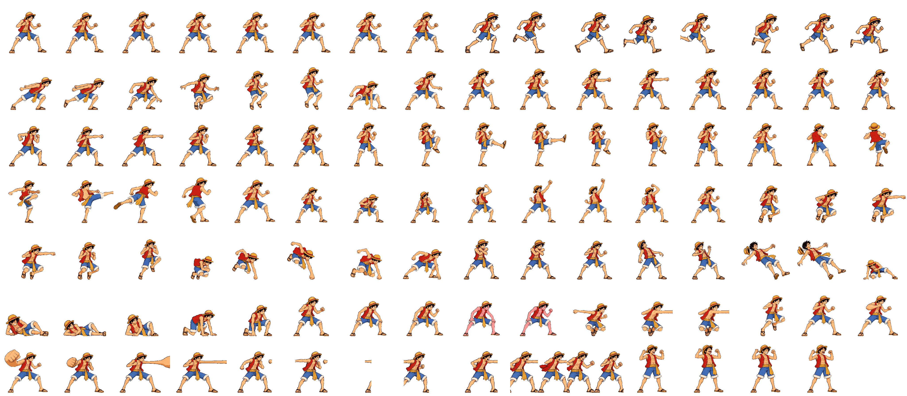
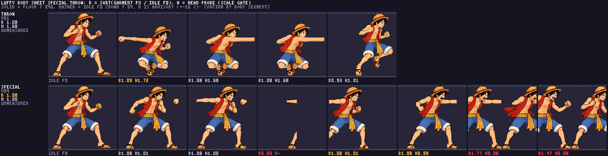
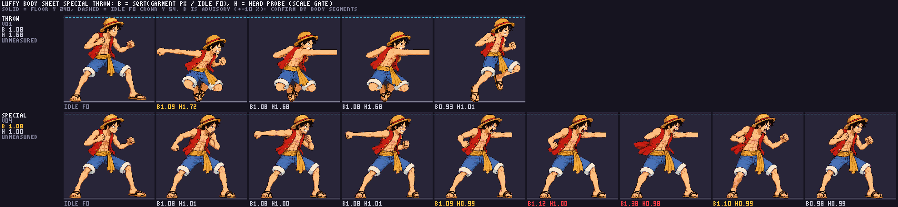
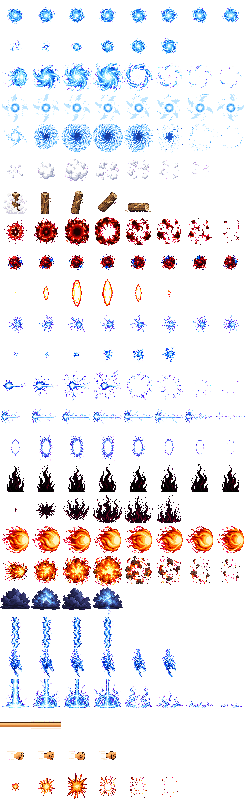

_rejected after v04 approval.
Batch 1 · Gum-Gum Pistol · Relays luffy-skills #1–4
_rejected after v04 approval.

gumArm v03 was approved as drawn. Relay #4's even-split sidecar imports its two intended frames; v01-v02 remain under _rejected. The packer warns f0 ends 1px short of the right tile edge; Claude reports that edge is hidden by the stretched arm in game. Runtime integration remains Claude's check.


These earlier diagnostic outputs preserve the pack state before relay #4. Their split findings are superseded by the corrected pack below.


Approved Luffy references: neutral · combat.
The first audit correctly held the pre-relay #4 atlas; the subsequent sidecars corrected the segmentation and a new audit passed the revised cells. It does not change the user's visual approvals.
special, cells 100–106: f2 contains only an arm fragment and lower leg/sandal; f5–f6 contain multiple partial bodies and cross-cell contamination; f3 has a cut rear leg. Detached fists, abruptly ending arms and insufficient active reach also occur. The packer maps 7/8 frames and phases [3,3,1] rather than the required eight and [3,3,2].throw, cells 90–93: bodies are mostly coherent and near reference scale, but the forward arm ends at x221/x220 in active cells 91/92, leaving 34/35 transparent columns before x255. Required edge continuation fails. The head-probe values 1.72/1.68/1.68/1.01 are suspect and are not evidence of enlarged anatomy.gumImpact retries 2 and 3 were not saved: neither output met the seven equal square cell strip contract. The three-call budget is exhausted. Existing gumImpact v01 still imports 9/7; gumArm v03 still has a blank first frame. gumFist v01 packs to four frames.These findings describe the superseded atlas only. See the updated technical evidence below.
The PNG sources are unchanged. The exact 48-color sheet maps special v04 to cells 100–107 and throw v01 to 90–93. Astra manually passed the anatomy/scale of all twelve actual cells against the approved idle and title-style references using the documented ART-SIZE-R7 ×0.92 fit. This does not certify hand reach/contact, timing or runtime integration.

bf9558cdb575c47e45d74474b749115c7ddd9c7b6993b7d27c75f4e531aa5905.

Final Astra frame-by-frame audit.
node tools/pack-sprites.mjs luffy --quantize 48 --keep-palette wrote 24 animations/112 frames, with special v04 8/8 and throw v01 4/4; Astra manual anatomy/scale PASS is bound to this exact sheet.npm run body -- luffy special throw and npm run scale -- luffy completed. Head-probe values are advisory where the straw hat shares colors with vest/torso.npm run sprites -- vfx writes gumArm 2/2, gumFist 4/4 and gumImpact 7/7. The gumArm one-pixel tile-edge warning remains; Claude reports it is hidden by the arm stretch in game.See the candidate inventory and exact generation provenance and review queue.